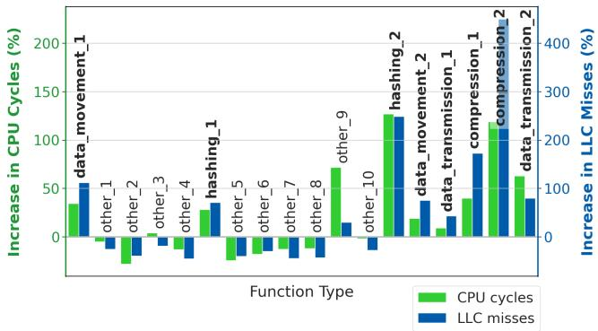
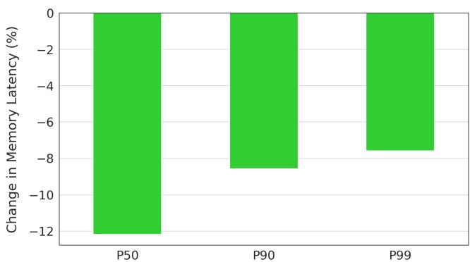
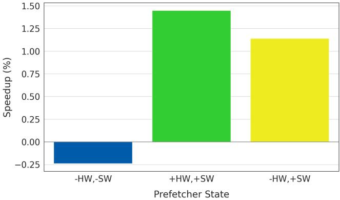

Limoncello: Prefetchers for Scale 通俗讲解¶
0. 整体创新点通俗解读¶
痛点直击 (The "Why")
这篇论文要解决的根本问题，是现代数据中心里一个“好心办坏事”的经典困境。硬件 prefetcher 的本意是好的：提前把数据从慢速的 DRAM 搬到快速的 cache 里，减少 CPU 等待时间。然而，在 Google 这种超大规模、高利用率的数据中心里，这个“好心”却成了性能瓶颈。
- 在高内存带宽利用率的场景下（这正是数据中心追求高效运营时的常态），硬件 prefetcher 会疯狂地发出大量预取请求。
- 这些请求不仅占用了宝贵的 memory bandwidth，还会和真正需要数据的应用请求在内存控制器处“打架”，导致排队延迟（queuing delay）急剧增加。
- 结果就是，虽然 cache miss rate 可能降低了，但每次 miss 后从 DRAM 取回数据的 latency 却大幅上升，最终拖垮了整体应用吞吐量（throughput）。简单说，就是“省了小钱，亏了大钱”。
通俗比方 (The Analogy)
想象一个繁忙的港口（内存系统），有很多货船（CPU 核心）等着卸货（数据）。港口调度员（硬件 prefetcher）为了提高效率，看到一艘船快到了，就提前让仓库（DRAM）把下一船的货也准备好。
- 在港口不忙的时候（低带宽利用率），这招很灵，船一到就能立刻卸货。
- 但在港口高峰期（高带宽利用率），所有调度员都这么干，结果仓库门口堆满了“可能用得上”的货物，反而把真正急需卸货的船给堵在外面了。整个港口的吞吐量不升反降。
Limoncello 的思路是：高峰期干脆让这些“热心过头”的调度员（硬件 prefetcher）先休息，然后派几个“特种兵”（软件 prefetcher）去精准地为最关键、最耗时的几艘船（特定库函数）提前清出通道。这样既缓解了拥堵，又保证了关键任务的效率。
关键一招 (The "How")
作者没有试图去修改或替换复杂的硬件 prefetcher，而是设计了一个聪明的 软硬协同动态切换策略，核心在于两点：
- 动态开关硬件 prefetcher：通过实时监控 socket 级别的 memory bandwidth utilization，当负载超过一个阈值（如80%）时，就通过写 MSR 寄存器直接关掉硬件 prefetcher；当负载回落到另一个较低阈值（如60%）以下时，再重新打开。这就像根据交通流量自动开关高架桥的入口匝道，防止主路彻底瘫痪。

Figure 6. Limoncello disables hardware prefetchers when memory bandwidth utilization is high to optimize for memory latency.
- 精准插入软件 prefetcher：硬件 prefetcher 关掉后，一些对内存延迟极度敏感的“数据中心税”函数（如 memcpy, compression, hashing）性能会下降。作者没有盲目地到处加软件 prefetch，而是利用一次大规模的 hardware ablation study（在数十万台机器上关闭硬件 prefetcher 做实验），结合 fleet-wide profiling，精准定位出哪些函数最“受伤”。然后，只针对这些函数，利用其已知的、规则的内存访问模式（比如连续拷贝），手动插入高度优化的软件 prefetch 指令。

Figure 11. Change in CPU cycles (%) from Hard Limoncello. Functions that regress in performance when hardware prefetchers are disabled show an increase in CPU cycles (green) and an increase in LLC MPKI (blue). Data center tax functions in particular show performance regressions from disabling hardware prefetchers while other functions tend to improve in performance and decrease in cycles and MPKI.

Figure 12. Aggregated change in CPU cycles (%) from Hard Limoncello. Data center tax functions (green) increased in CPU cycles under Hard Limoncello. In contrast, overall nondata center tax functions (blue) decreased in cycles.
这个方案的精妙之处在于，它避开了传统方法的两大难题：一是不需要昂贵的硬件改动，二是避免了在海量、多样的生产环境中做全程序 profile-guided optimization 的不切实际。它用一种“外科手术式”的精准打击，解决了大规模系统中的一个全局性瓶颈。最终效果显著：在峰值负载下，memory latency 降低15%，application throughput 提升10%。

Figure 16. Limoncello application throughput gain. Application throughput increases by 6-13% increase, dependent on the CPU utilization level of the machines.

Figure 17. Limoncello memory latency reduction. Memory latency reduces by 13% in the median and 10% in the P99.
1. Hard Limoncello (ELI5)¶
痛点直击 (The "Why") - 传统硬件预取器（Hardware Prefetcher）的设计哲学是“不惜一切代价减少 Cache Miss”，这在内存带宽充裕的实验室环境（如跑 SPEC benchmark）下很有效。 - 但在 Google 这样的高利用率数据中心里，情况完全相反：内存带宽是稀缺资源，早已成为瓶颈。此时，硬件预取器还在拼命地、不加区分地预取数据，结果就是： - 浪费宝贵的内存带宽：预取了很多可能根本用不上的数据。 - 加剧内存拥塞：导致真正需要的数据（demand request）排队等待时间变长，即 load-to-use latency 暴增。 - 简单说，就是“好心办坏事”——为了省一点 CPU 周期去等 Cache，却花了更多时间在内存队列里干等。
通俗比方 (The Analogy) - 想象一个繁忙的港口（内存控制器），货船（内存请求）络绎不绝。 - 硬件预取器就像是一个过于热心的仓库管理员，他看到某艘船要来卸货，就自作主张地让好几艘空船（预取请求）提前开到港口边等着装货。 - 在港口空闲时（低带宽利用率），这没问题，甚至能加快速度。 - 但在港口已经堵得水泄不通时（高带宽利用率），这些空船不仅占着宝贵的泊位，还挡住了真正要装卸货物的船只，导致整个港口的吞吐效率反而下降了。 - “Hard Limoncello” 就像是港口的智能调度系统：一旦发现港口拥堵指数（内存带宽利用率）超过警戒线，就立刻下令让那个热心过头的管理员“闭嘴休息”，停止派发空船，把所有资源都留给真正有需求的船只。
关键一招 (The "How") - 作者没有去修改或替换硬件预取器本身（那需要芯片厂商介入，成本太高），而是做了一个纯软件的“开关控制器”。 - 这个控制器的核心逻辑非常清晰，但设计得很稳健： - 动态阈值判断：持续监控每个 CPU Socket 的 内存带宽利用率。 - 当利用率超过一个高阈值（例如 80%）时，通过写 MSR (Model-Specific Register) 直接 关闭硬件预取器。 - 当利用率回落到一个低阈值（例如 60%）以下时，再重新打开。 - 引入迟滞机制 (Hysteresis)：这是防止系统在阈值边缘疯狂抖动的关键。高低阈值之间留出一个缓冲区，并且要求状态必须持续一段时间才触发切换，保证了系统的稳定性。

Figure 8. State diagram of Hard Limoncello controller for modulating hardware prefetchers. Green (lighter) indicates hardware prefetchers are off, blue (darker) that they are on.
- 这一招的本质，是在系统运行时动态地在两种模式间切换：
- 低负载模式：开启硬件预取，优化 Cache Miss Rate。
- 高负载模式：关闭硬件预取，优化 Memory Latency 和 Memory Bandwidth 效率。
- 最终效果立竿见影：在高负载下，内存延迟降低了 15%，为后续的性能提升打下了基础。

Figure 18. Limoncello socket bandwidth usage reduction. Average socket bandwidth reduces by 15%.
2. Soft Limoncello (ELI5)¶
痛点直击 (The "Why")
- 传统硬件 Prefetcher 在 高内存带宽利用率 的数据中心场景下，会“好心办坏事”。
- 它们为了追求 高缓存命中率 (cache hit rate)，会非常 aggressive（激进） 地发出大量预取请求。
- 这导致两个严重问题：
- 浪费宝贵的内存带宽：预取的数据可能根本用不上，或者被其他任务挤掉，变成 cache pollution（缓存污染）。
- 增加内存延迟：过多的预取请求在内存控制器排队，让真正需要数据的 demand request（需求请求） 等得更久。
- 当系统关闭硬件 Prefetcher 来缓解上述问题时，又会带来新麻烦：那些 访问模式简单、规律性强 的关键函数（论文里叫 data center tax functions）会因为缺少预取而 性能骤降，表现为 LLC MPKI（Last Level Cache Misses Per Kilo Instructions） 急剧上升。
通俗比方 (The Analogy)
- 想象一个繁忙的中央厨房（内存系统），里面有很多厨师（CPU核心）在同时做菜（处理任务）。
- 硬件 Prefetcher 就像一个 自作聪明的仓库管理员。他看到某个厨师经常用盐，就不管三七二十一，把一整袋盐都推到厨师的操作台上。结果操作台堆满了用不上的盐（cache pollution），其他厨师要拿酱油都找不到地方，整个厨房效率反而下降了。
- Soft Limoncello 的做法是：当厨房太忙（高带宽压力）时，先让那个笨管理员 休息一下（关闭硬件 Prefetcher）。然后，给几个 最关键、流程最固定的厨师（如专门负责切菜/焯水的 data center tax functions） 配一个 私人助理。
- 这个私人助理 非常精准：他知道主厨下一步 确切 要用哪把刀、哪种料，并且只在他 刚好需要前的一瞬间 把东西递过去。这样既不会占地方，又能保证主厨的手不停下来。
关键一招 (The "How")
- 作者没有试图去修改或替换硬件 Prefetcher，而是设计了一套 精准外科手术式 的软件预取策略。
- 其核心逻辑转换在于 目标选择 和 插入方式：
- 目标选择：通过在 真实生产环境（fleet-wide） 中进行大规模 硬件消融实验（ablation study）——即在成千上万台机器上关闭硬件 Prefetcher——来观察哪些函数 真正受害。他们发现，data center tax functions（如
memcpy、压缩、哈希等）是主要受害者。这些函数的特点是 访问模式高度可预测（通常是顺序访问大块内存），非常适合软件预取。

Figure 10. Application throughput based on different Hard Limoncello configurations. ?? /?? indicates the lower (?? %) and upper (?? %) memory bandwidth thresholds in the configuration. Thresholds are expressed as a percentage of memory bandwidth saturation.
Figure 11. Change in CPU cycles (%) from Hard Limoncello. Functions that regress in performance when hardware prefetchers are disabled show an increase in CPU cycles (green) and an increase in LLC MPKI (blue). Data center tax functions in particular show performance regressions from disabling hardware prefetchers while other functions tend to improve in performance and decrease in cycles and MPKI.
- 插入方式：针对这些特定函数，在其源代码中 手动、精确地插入
prefetch指令。这个过程不是盲目的，而是基于对函数 调用参数分布（例如memcpy的拷贝大小）和 内存访问模式 的深入分析，来决定三个关键参数：- Prefetch address：预取哪个确切的地址。
- Prefetch distance：提前多少字节开始预取。
- Prefetch degree：一次预取多少数据。

Figure 13. Software prefetch instructions act on addresses at a distance and can prefetch different degrees of data.
- 以
memcpy为例，他们发现大多数拷贝操作很小，但性能回退主要发生在 大块内存拷贝 上。因此，他们只为 超过特定大小阈值 的memcpy调用插入预取指令，并通过微基准测试（microbenchmarks）找到了最优的 distance 和 degree 组合。

Figure 14. memcpy argument size distribution. The chart shows the probability density function (PDF) of the number of times each copy size appears in the profiling data. Most copy sizes are small.

Figure 15. Soft Limoncello memcpy microbenchmarking.
- 最终效果是：在硬件 Prefetcher 关闭、系统内存压力大的时候，这些关键函数依然能保持 低 MPKI，从而避免了整体性能的回退。

Figure 20. Software prefetcher impact in Limoncello. The y-axis shows the portion of fleetwide cycles spent in the respective function categories. The center bar (green) shows Hard Limoncello deployed without any software prefetchers. Adding software prefetchers into Limoncello lowered CPU cycles spent in targeted functions by 2% (yellow).
3. 基于大规模硬件消融研究的目标识别方法 (ELI5)¶
痛点直击 (The "Why")
- 传统的 profile-guided software prefetching 方法在超大规模数据中心里根本玩不转。为什么？因为它依赖于“有代表性的 benchmark 和输入数据”来生成性能画像。
- 但在 Google 这种级别的舰队里，工作负载（workloads）和输入数据的多样性是天文数字级别的。你根本找不到一个能代表所有场景的“标准测试集”。
- 结果就是，传统方法要么找不到好的预取点，要么找到的点只对一小部分 workload 有效，无法规模化（scale）。这导致软件预取的潜力被严重低估。
通俗比方 (The Analogy)
- 想象你要给一个拥有数百万员工的跨国公司做“员工效率优化”。传统方法是找几个“典型员工”做深度访谈和观察（benchmarking），然后推广他们的高效工作法。
- 但这个公司业务太杂了，有程序员、销售、物流司机、厨师……你访谈的“典型程序员”的方法，对物流司机完全没用。
- Limoncello 的做法是：直接给全公司发一个“临时政策变更”——比如，今天所有人都不能用公司内部的自动咖啡机（类比 disabling hardware prefetchers）。然后，通过遍布全公司的监控系统（fleetwide profiling tools），实时观察哪些部门的员工工作效率暴跌（CPU cycles 增加，LLC MPKI 上升）。
- 那些效率暴跌的部门，就是最依赖“自动咖啡机”（硬件预取）的部门。他们就是你下一步要重点帮扶的对象——给他们每个人配一个私人助理，精准地在他们需要时送上咖啡（targeted software prefetching）。
关键一招 (The "How")
- 作者没有试图去模拟或预测 workload 行为，而是进行了一次史无前例的大规模 硬件消融实验 (hardware ablation study)。
- 具体操作就是：在数十万台生产机器上，真的把 hardware prefetchers 给关掉。
- 然后，利用 Google 强大的 fleetwide profiling infrastructure，以前所未有的粒度（函数级别）去测量这次“关停”带来的影响。
- 通过对比实验组（prefetchers off）和对照组（prefetchers on）的性能数据，他们能精确地定位到：
- 哪些函数在硬件预取关闭后，LLC MPKI 急剧上升。
- 哪些函数因此消耗了更多的 CPU cycles。
- 这些“受伤最重”的函数，就是所谓的 data center tax functions（如 memcpy, compression, hashing 等），它们被证明是高度可预取 (prefetch-friendly) 的，并且是软件预取的最佳目标。
- 这个方法的精妙之处在于，它把一个“预测问题”（predict where to prefetch）转化成了一个“观测问题”（observe what breaks when you remove prefetching）。观测结果直接、可靠，并且天然具备 fleet-wide 的代表性。
Figure 10. Application throughput based on different Hard Limoncello configurations. ?? /?? indicates the lower (?? %) and upper (?? %) memory bandwidth thresholds in the configuration. Thresholds are expressed as a percentage of memory bandwidth saturation.
Figure 11. Change in CPU cycles (%) from Hard Limoncello. Functions that regress in performance when hardware prefetchers are disabled show an increase in CPU cycles (green) and an increase in LLC MPKI (blue). Data center tax functions in particular show performance regressions from disabling hardware prefetchers while other functions tend to improve in performance and decrease in cycles and MPKI.
4. 软件预取参数调优（地址、距离、度） (ELI5)¶
痛点直击
- 传统的 软件预取（Software Prefetching） 调优是个“盲人摸象”的过程。你不知道该在代码哪一行插 prefetch 指令，该提前多远（prefetch distance），又该一次拉多少数据（prefetch degree）。
- 在单机或小规模场景下，开发者可以靠经验、微基准测试甚至猜来调参。但在像 Google 这样的超大规模数据中心里，工作负载千奇百怪，输入数据分布极广，这种“手工调参”方式完全不可扩展，且极易过拟合到某个特定 benchmark。
- 更要命的是，如果参数没调好，软件预取不仅没用，反而有害：它会浪费宝贵的 CPU 周期去执行无用的 prefetch 指令，并产生额外的、不必要的 memory bandwidth 流量，在本就紧张的带宽环境下雪上加霜。
通俗比方
- 这就像一个快递调度中心，需要为即将到来的海量订单提前把货物从仓库深处搬到分拣区。
- 预取地址 就是你要搬哪个货架上的货。
- 预取距离 就是你看到订单后，要提前多久开始搬（太早，货放分拣区太久占地方；太晚，订单来了货还没到）。
- 预取度 就是你一次搬多少件（搬太少，来回跑腿累死；搬太多，可能很多货根本没人订，纯属浪费力气）。
- Limoncello 的做法不是靠调度员个人经验，而是分析了整个城市过去一年所有订单的历史数据（即 fleetwide profiling），精准地知道哪些商品（memcpy 等 data center tax functions）经常被大量订购，以及它们的典型订单大小（argument size distribution）。有了这个全局视野，就能科学地制定搬运策略。
关键一招
作者并没有凭空猜测或依赖不具代表性的 microbenchmarks，而是构建了一个数据驱动的闭环调优流程：
- 第一步：利用硬件消融实验定位“痛点函数”。
- 通过在真实生产环境中大规模关闭 hardware prefetchers，并利用全局性能分析工具，精确识别出哪些函数（如 memcpy, compression）在缺失硬件预取后性能暴跌（表现为 LLC MPKI 和 CPU cycles 大幅增加）。
-
这些函数就是值得投入精力进行软件预取优化的高价值目标。
-
第二步：用真实世界的数据指导参数搜索空间。
- 对于像
memcpy这样的目标函数，他们没有对所有调用一视同仁。通过分析 fleetwide profiling 数据，发现大多数调用是小尺寸的，但性能回退主要来自大尺寸的 memcpy 调用。 - 因此，他们将软件预取的优化重点聚焦在大尺寸调用上，这极大地缩小了需要调优的场景范围，使优化更有针对性。
Figure 14. memcpy argument size distribution. The chart shows the probability density function (PDF) of the number of times each copy size appears in the profiling data. Most copy sizes are small.
- 第三步：在精心设计的微基准上进行系统性参数扫描。
- 他们使用能反映真实 fleet 行为的微基准（如 Fleetbench, LLVM libc benchmarks）。
- 在这些基准上，固定其他变量，只改变一个参数（例如，固定 prefetch degree 为 256 bytes，扫描不同的 prefetch distance），观察性能变化。

- 通过这种“控制变量法”，他们能清晰地找到每个参数维度上的最优值或最优区间，而不是在三维参数空间里盲目乱撞。

(b) Microbenchmark exercising different prefetch degrees. Prefetching is fixed at a distance of 512 bytes.
- 第四步：回归验证，确保真实收益。
- 找到理论上的最优参数组合后，必须回到更复杂的 load tests 中进行验证，确保在接近真实生产环境的压力下，这些预取指令依然能带来净性能收益，而不是在简单 microbenchmark 上的“虚假繁荣”。
这个流程的精髓在于，它用真实、大规模的生产数据替换了传统软件预取中充满不确定性的“猜测”和“假设”，将一个模糊的工程问题转化为了一个可量化、可验证的数据科学问题。